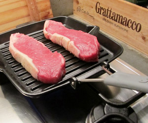

Entrecôte in Gäbis neuer Pfanne
5 von 6Grosse Entrecôte pro Seite ca. 4 Minuten garen bis der gewünschte Garpunkt erreicht wird. Würzen und sofort servieren.

Grosse Entrecôte pro Seite ca. 4 Minuten garen bis der gewünschte Garpunkt erreicht wird. Würzen und sofort servieren.

Montagsplausch Nr. 297. Der Abend hiess «Staub's Grill».